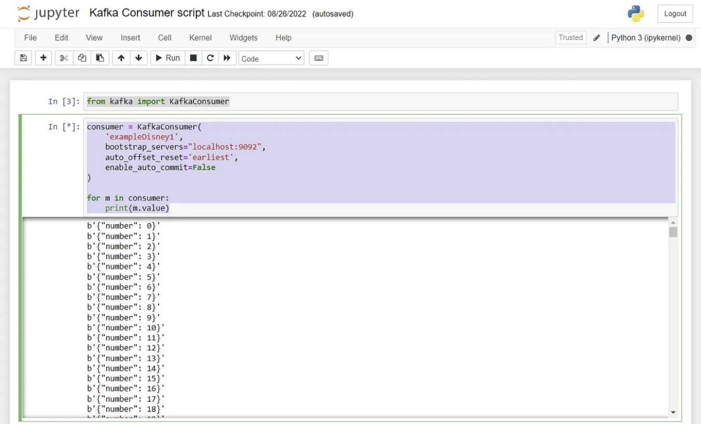
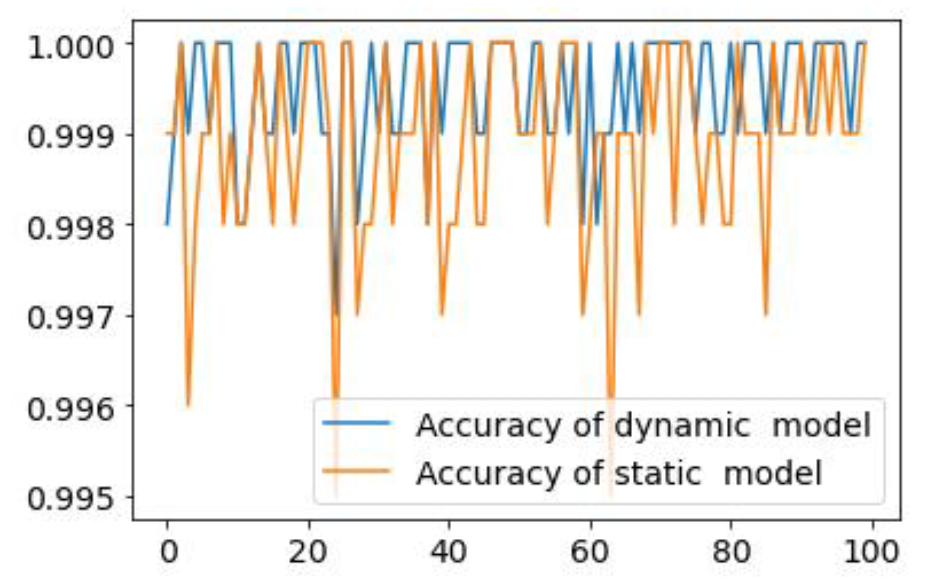

Principles of online learning in cyberSecurity with Machine Learning and Kafka
Role
While TAing for the AI in cybersecurity lecture, I was asked to create a project for the
students to practice online learning with a continuous flow of constant information. In
this case, I had to work by myself.
Problem
For this exercise, I was asked to create a service which could be hosted locally (within
the computer of each student). This service should be able to provide a continuous flow
of data extracted from a CSV file, which would then be read using Python. This flow of data
will be locally stored in packets of 10,000 rows. This packet will first be used to train a
base Machine Learning model. This first model will be used as a baseline. As the flow of information
continues, the data set will keep coming, and we will be overwriting the first packet with new
unseen information.
This second packet will be used for two purposes: first, to test the base model and obtain the
performance metrics. Second, to re-train our base model and create a second model whose metrics
will be compared with the base. This process will be continuously repeated until the flow of
information comes to an end. Once the flow is over, we will compare the performance of the base
model, which was never re-trained, with the version of the continuously re-train model.
The original purpose of this paper was to propose a novelty solution to
DNS attacks, and if you want to read more about the topic, please click on the following
link to article
Related to the article, it is essential to mention that for this exercise, we used part of
the "CIC-Bell-DNS-EXF-2021 Dataset," which was created by exfiltrating of sending
different files with variable sizes, making use of the DNS vulnerability mentioned before.
The dataset contains 15 features and a target variable, indicating whether the data point
is an attack or benign. Of course, the objective of the exercise was to create an ML model
which will be able to discriminate between attacks and regular traffic, updating a model
when it is most beneficial.
Solution
To simulate the continuous flow of information, I used a Docker Container, which is
pre-configured to perform this exact action. The service I used was based on Kafka, and the
exact image is image: wurstmeister/kafka. This is beneficial as we can use this container
locally and query the information locally. I wrote a complete tutorial on how to
configure the service in dockers and also how to create the Python scripts to make
use of the data. If you want to look into more detail, please click the following.
link to my blog
The image below shows an example of how the consumer runs within a Jupyuter notebook
and how the information is sequentially sent and printed.

For this excercise I decided the make some basic assumptions:
-
As my dataset was unbalanced,
I will track the F1 score of both models, the base and the dynamic model.
- I will be using a fixed-size window of sequential elements, in this case, and as
I also mentioned before that I will be creating batches of data of size 10,000.
Each time I receive 10,000 new elements, I will pause the reception, and I will take 30%
of that data, then evaluate both of my models. And decide then if I should retrain my
dynamic model.
- I need a threshold to decide if my dynamic model needs to be retrained after each
window. For this, as mentioned before, I will be analyzing the F1 score of the models.
I have decided that if the metric is consistently below 70% for two consecutive
iterations, I will retrain the model. (this was a decision made by trying different
combinations of percentages and several continuous fails)
-
Another assumption I will make is the number of features I will use. For this, I first
tried using all the variables but then performed a feature selection with the Pearson
Correlation method and test with the base model, how many top features made my model
perform the best. The winning combination was discovered using 9 of the 15 top
features.
-
The last assumption I will make will be my model. So, for this case, I tried training
only three models: A Decision Tree Classifier, a Random Forest Classifier and a GBoost
Binary Classifier
Impact
After 100 iterations, I concluded that the GBoost Classifier offered the best performance.
And in the image below, you can appreciate the behaviour of both models. As it can be appreciated,
the dynamic model is slightly more stable even when the values fluctuate only 0.005%.

Code and Further Information